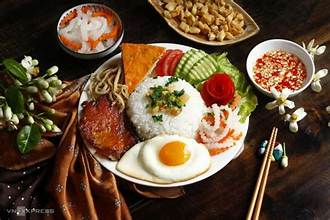

Tình yêu
Tình yêu là gì? Là ta yêu một người mỗi ngày trong một năm, mỗi năm trong một đời người...
Tình yêu là gì? Là ta yêu một người mỗi ngày trong một năm, mỗi năm trong một đời người...
Nấu ăn hạnh phúc gia đình chính là thương mến và lắng nghe những gì thật đẹp để vun đắp tình thân qua những giờ ăn ấm áp...
Có thể chúng ta cần nhiều chất dinh dưỡng từ nhiều nguồn lương thực khác nhau...
Sức khỏe chính là hạnh phúc. Không hút thuốc lá tức là giảm thiểu đáng kể rủi ro mắc các loại bệnh ung thư...

Các món ăn mỗi vùng miền. Chuyên mục này đưa bạn đến món ngon Hà Nội và nhiều món ăn dân dã ở miền Tây.
Nâng sân trường, mẹ yêu không nào, ba bà đi bán lợn con.
Bao đời mặt trời, muôn thương, lý cây bông.